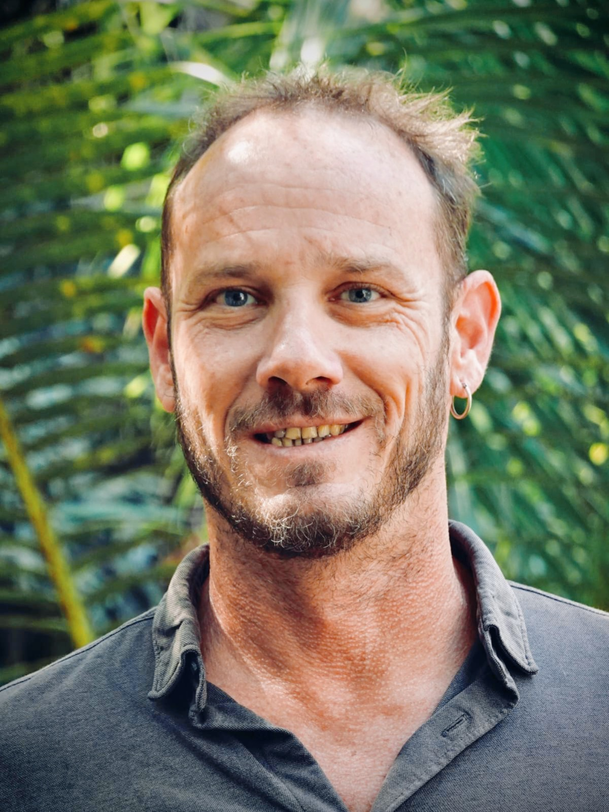

Sports côtiers, territoires & maritimité
Analyse des usages sportifs du littoral, des relations à l’océan et du rôle des pratiques sportives dans les processus de développement territorial et de construction d’une nouvelle maritimité.

Docteur en Sciences et Techniques des Activités Physiques et Sportives
Socio-géographie des sports de nature, territoires et relations aux milieux.
Mes travaux portent sur les relations entre pratiques sportives, territoires et milieux naturels, avec une attention particulière aux sports côtiers, aux cultures du surf, à la maritimité, à la figure du waterman ainsi qu’aux risques et controverses associés aux usages récréatifs du littoral.
Présentation
Docteur en STAPS, mes recherches s’inscrivent principalement dans le champ de la socio-géographie des sports de nature, à l’articulation de la géographie sociale, de la sociologie des pratiques sportives et de l’analyse territoriale.
Je m’intéresse à la manière dont les pratiques sportives contribuent à transformer les territoires, les représentations et les relations que les sociétés entretiennent avec leurs milieux. Le littoral réunionnais constitue un terrain privilégié de cette réflexion : sports côtiers, développement territorial, construction d’une nouvelle maritimité, cultures du surf, figure du waterman, risque requin et conflits d’usage.
Ces travaux articulent observation des pratiques, analyse des systèmes d’acteurs et étude des controverses. Mes enseignements actuels m’amènent également à mobiliser les apports de l’anthropologie de la nature pour interroger les relations entre pratiques sportives, sociétés et milieux naturels. Il s’agit à ce jour d’un champ d’enseignement et de réflexion en développement, et non encore d’un axe autonome de publications scientifiques.
Axes de recherche
Analyse des usages sportifs du littoral, des relations à l’océan et du rôle des pratiques sportives dans les processus de développement territorial et de construction d’une nouvelle maritimité.
Étude des transformations historiques et sociales du surf, de la diversification des pratiques et de la recomposition des identités sportives, notamment à travers la figure du waterman.
Analyse des interactions humains-requins, de la gestion publique du risque, des conflits d’usage et des controverses environnementales liées aux pratiques récréatives du littoral.
Mes enseignements et réflexions actuels mobilisent l’anthropologie de la nature afin d’interroger les différentes manières de construire, pratiquer et habiter les milieux naturels. Cette ouverture prolonge les travaux menés sur la maritimité, les cultures sportives et les interactions entre sociétés et environnements.
Trajectoire scientifique
La thèse pose les bases d’une lecture territoriale des sports côtiers dans l’Ouest de La Réunion et interroge leur contribution à l’émergence d’une nouvelle relation à l’espace maritime.
Les travaux consacrés à l’événementiel sportif côtier et au waterman prolongent cette réflexion en articulant développement territorial, cultures sportives et transformation des figures du pratiquant.
La crise requin conduit à déplacer le regard vers le risque, les controverses, les politiques publiques et les interactions entre pratiques humaines et environnement marin, jusqu’à une approche comparative entre La Réunion et la Nouvelle-Calédonie.
Les travaux et enseignements actuels prolongent ces problématiques autour des relations entre pratiques sportives, territoires, milieux naturels et controverses environnementales.
Focus de recherche
La figure du waterman permet d’interroger le passage d’une identité sportive centrée sur une discipline à une relation plus globale au milieu marin.
Le waterman se caractérise par la maîtrise de plusieurs pratiques océaniques, mais également par une capacité à lire et à comprendre son environnement. Sa légitimité ne repose pas uniquement sur la performance sportive : elle se construit dans l’expérience, la connaissance du milieu et la reconnaissance par les pairs.
Mes travaux interrogent également les tensions qui traversent cette figure contemporaine : inscription dans une culture maritime, ancrage territorial, transmission de savoirs, mais aussi appropriation médiatique et commerciale du terme.
CV scientifique
Les références sont classées chronologiquement. Les liens renvoient prioritairement aux articles publiés en ligne ; lorsqu’une version auteur ou un document est disponible, le PDF est proposé directement.
F. Taglioni, S. Guiltat, M. Delsaut, P. Tirard & D. Payet.
Lire l’article ↗S. Guiltat, dans C. Guibert (dir.), Maison des Sciences de l’Homme d’Aquitaine, p. 149–168.
Lire le PDF ↗F. Taglioni, S. Guiltat, M. Teurlai, M. Delsaut & D. Payet.
Lire l’article ↗S. Guiltat, dans La Déferlante Surf, Musée d’Aquitaine, Bordeaux, p. 291–293.
Lire le PDF ↗F. Taglioni & S. Guiltat · Humanités environnementales à La Réunion.
F. Taglioni & S. Guiltat.
Lire l’article ↗S. Guiltat, dans Sport, nature et développement durable. Une question de génération ?, Maison des Sciences de l’Homme d’Aquitaine, p. 105–118.
Lire le PDF ↗S. Guiltat, dans O. Bessy (dir.), L’innovation dans l’événementiel sportif, p. 206–214.
Lire le PDF auteur ↗S. Guiltat.
Voir la notice / le texte ↗Identifiants & visibilité scientifique
Identifiants de chercheur, archives ouvertes et profils permettant d’accéder aux références, citations et travaux associés.
Diffusion des travaux
Les PDF proposés ici correspondent aux versions dont je dispose. La mise à disposition publique doit rester compatible avec les droits des éditeurs et des ouvrages collectifs. Lorsque la diffusion intégrale n’est pas autorisée, le lien vers la publication ou la notice bibliographique doit être privilégié.
Cette page scientifique personnelle est conçue comme un espace léger, responsive et sans dépendance technique externe.